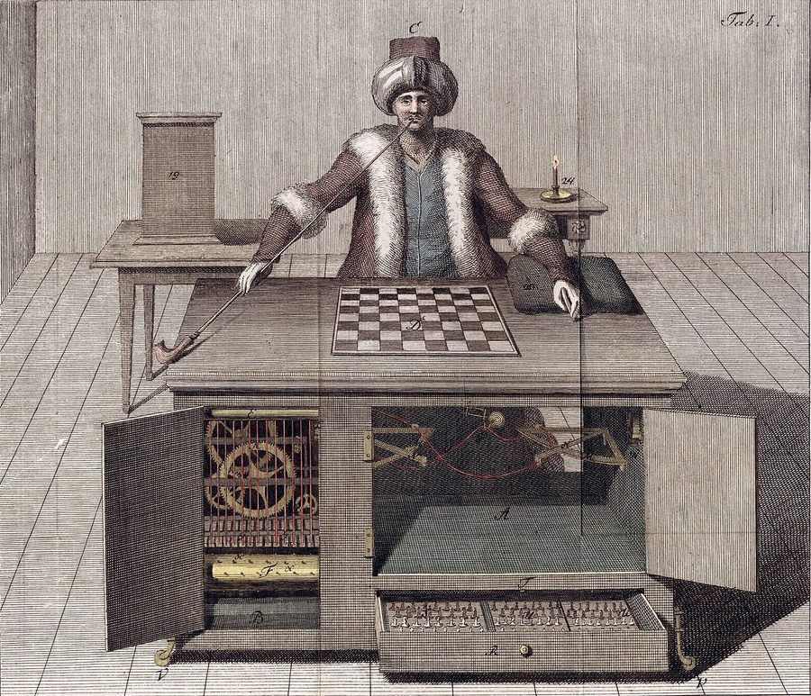
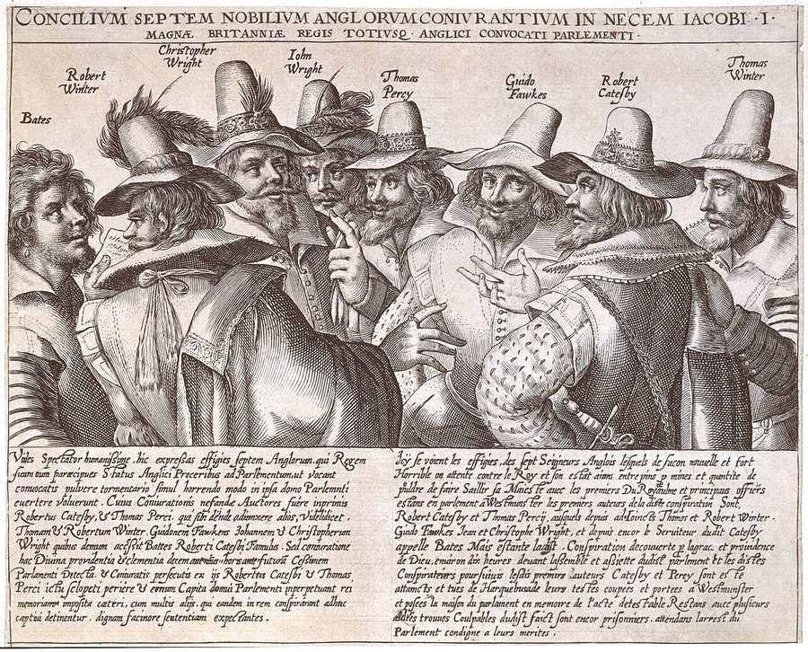
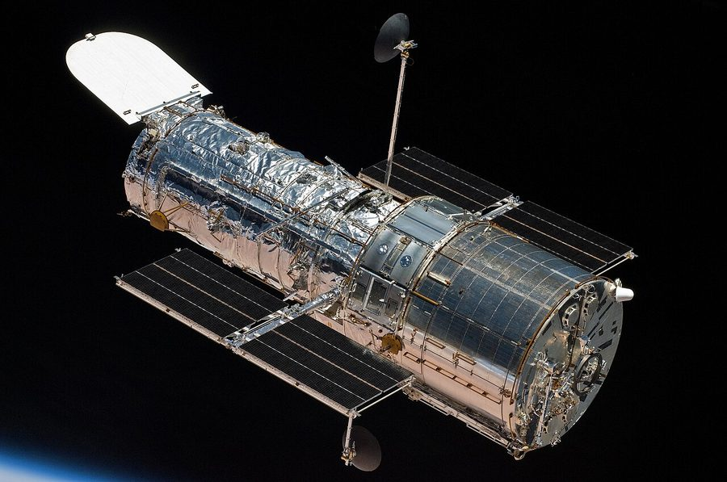

Москва · пятницаВыпуск из Москвы и из-под землиЦена: бесплатно
TheSéance Times
газета для тех, кто разговаривает с прошлым
№ 010 · 6 ноября 2026Десятый выпускЧтение: 14 минут
Машина · главное
Агенты выходят из чата
Airbnb в четверг назвала срок: собственный ИИ-агент выйдет в первой половине 2027 года. Не чат с ответами, а интерфейс, который собирается на ходу под вопрос — карты, фотографии, сравнения, календари, маршруты. В тот же день Serve Robotics объявила новое направление: продавать другим роботам связь с дата-центром. Пока спорят, заменит ли агент человека, кто-то уже продаёт агенту инфраструктуру.
События — 5 ноября 2026 · TechCrunch, отчётность Airbnb и Serve Robotics · 6 минут
Возвращение к теме случилось не в интервью, а в письме акционерам по итогам третьего квартала — то есть в документе, за который спрашивают на звонке с аналитиками. Airbnb подтвердила: агент выйдет в первой половине 2027 года. Раньше компания говорила обтекаемее — «в течение следующего года».
Главное в описании — не модель, а оболочка. Брайан Чески, исполнительный директор, объяснил на звонке, почему не хочет отдавать путешествие универсальному агенту: «Сегодняшние ИИ-агенты вроде Muse и Instinct хорошо справляются с простыми рутинными задачами — забронировать столик, назначить встречу. Но планирование поездки — другое. Путешествие — это мечта. Найти, куда поехать и где остановиться, — часть впечатления». По его словам, 80 процентов путешественников говорят, что им нравится тратить время на изучение поездки: смотреть фотографии, сравнивать жильё, решать вместе с теми, с кем едешь.

Автомат, которому верили двести лет: «Турок» Вольфганга фон Кемпелена, гравюра Иоганна Фридриха Ракница, 1789 год. Шкаф открыт, механизм показан — и всё равно публика предпочитала думать, что машина играет сама. Внутри сидел человек. Нынешние агенты устроены наоборот: снаружи человекоподобная речь, внутри — машина. Общественное достояние, Wikimedia Commons.
Технически обещанное выглядит так: агент не отвечает текстом, а «строит интерфейс» вокруг вопроса. У компании, по словам Чески, библиотека из сотен компонентов именно для путешествий — карты, фотографии, сравнения, календари, маршруты, — и агент компонует их в реальном времени. Сам он называет это «немного похоже на генеративный интерфейс»: нужный экран в нужный момент. В письме акционерам добавлено, что агент будет работать и после брони: менять резервацию, разбираться с платежом, возвратом, перебронированием, круглосуточной поддержкой по безопасности. Именно этого, по мысли компании, внешний агент сделать не сможет.
Финансовая часть объясняет, почему объявление сделано сейчас. Выручка квартала — 4,87 миллиарда долларов, рост на 19 процентов, выше ожиданий Уолл-стрит; прогноз роста на весь 2026 год поднят с «середины подростковых» до «верхней части подростковых» процентов. Чески на звонке сказал, что это самый быстрый рост выручки за три года. Агент, таким образом, анонсирован не из нужды, а из прибыли — что для рынка ИИ редкость.
Вторая новость того же дня — из другого цеха. Serve Robotics, делающая самоходные тележки для тротуаров, объявила направление Physical AI Services. Три продукта: Serve Link — связь робота в поле с ИИ в дата-центре, чтобы не тащить всё вычисление на борт; инструмент отбора «краевых случаев» из сырых записей робота для дообучения модели; и каталог данных реального мира, собранный собственными тротуарными роботами. Первый названный клиент — Bedrock Robotics, делает автопилот для строительной техники. Партнёр — T-Mobile.
«Я думаю об этом как о моменте AWS: мы берём технологию, которую построили для себя, и открываем её другим, — сказал исполнительный директор Али Кашани. — Когда технология совсем новая, приходится делать всё приложение целиком, иначе не поймёшь, что строить. Но со временем всё больше людей захотят строить похожее. И тогда ты открываешь технологию, чтобы строили с тобой и на твоей платформе». Компания выделилась из покупки Postmates компанией Uber в 2021 году и вышла на биржу в 2024-м; роботов для больниц она получила вместе с покупкой Diligent Robotics.
Срок AirbnbПервая половина 2027 года; ранее компания говорила «в течение следующего года».
Что делает агентСобирает экран из сотен готовых компонентов (карты, фото, сравнения, календари, маршруты) и ведёт бронь после заселения: платежи, возвраты, перебронирование, поддержка 24 часа.
Цифры AirbnbВыручка III квартала — 4,87 млрд долларов (+19 процентов); прогноз роста 2026 года повышен до верхней части «подростковых» значений; 80 процентов путешественников, по словам Чески, любят сам процесс выбора.
Serve RoboticsВыделилась из Postmates (Uber) в 2021-м, на бирже с 2024-го; три продукта — Serve Link, отбор кромочных данных, каталог данных реального мира; клиент — Bedrock Robotics, партнёр — T-Mobile.
Чего нетНи цены, ни модели, ни названия продукта Airbnb; у Serve — ни выручки направления, ни сроков. Это анонсы, а не результат.
Что здесь факт, а что — обещание
Факт: срок и описание агента — из официального письма акционерам и звонка с аналитиками, то есть слова компании под запись. Факт — цифры квартала: выручка 4,87 миллиарда, рост 19 процентов, повышенный прогноз. Факт — существование направления Physical AI Services у Serve Robotics, названный клиент и партнёр.
Не факт: что «генеративный интерфейс» окажется удобнее чата. Это гипотеза Чески, и проверять её будет рынок в 2027 году. Не факт: что агент Airbnb не сможет обойти внешний агент: всё, что компания называет невыполнимым для чужих, — это доступ к её собственной базе броней, а не технология. Не факт: что «AWS для роботов» — про инфраструктуру; пока это про данные. И главное: ни одна из компаний не назвала, сколько это стоит и сколько приносит.
Самый прибыльный товар для ИИ-агента — не ответ, а доступ: к каталогу, к брони, к складу. Поэтому все, у кого есть каталог, сейчас строят агента сами.
Редакционный вывод
Практический смысл — для того, кто продаёт не поездки, а книги и текст. Оба анонса говорят об одном: агент работает не с прозой, а со структурой. Он берёт карточку, цену, дату, наличие, отзыв — и собирает из них экран. Значит, всё, что нельзя прочитать как карточку, для агента не существует: красивая страница книги без разметки, цены и ссылки на покупку для него — пустое место. Проверить свою страницу просто: открыть её исходный код и посмотреть, есть ли там машиночитаемые данные о книге, цене и наличии, а не только абзацы. Второе: если у магазина есть свой агент, он приведёт покупателя туда, где данные полнее, — это тот же механизм, что и с поиском, только быстрее. Третье, отрезвляющее: инфраструктура для агентов продаётся по счётчику — за связь, за данные, за вызовы. Тот, кто сегодня платит за токены, завтра будет платить ещё и за то, чтобы его товар был виден агенту.
И самое интересное в этой паре — не сроки, а признание. Airbnb строит агента не потому, что верит в чат, а потому, что не хочет отдавать посреднику свою же бронь. Serve Robotics продаёт не роботов, а нервную систему для чужих роботов — то есть ставит на то, что роботов будет много и разных. Обе компании делают одно и то же: ищут место, где можно стоять не в очереди за вниманием, а между вниманием и вещью. В истории с «Турком» такое место занимал человек в шкафу, и оно было самым надёжным в комнате.
Кино
Второй материал · 5 минут
Опера для трёхсот тонн
«Годзилла: Минус ноль» — продолжение «Минус одного», снятое теми же руками. Рецензент Reactor посмотрела картину дважды на Нью-Йоркском кинофестивале и пишет: это первая японская лента, снятая для IMAX, и, возможно, лучше первой части. Разбираем, что именно там работает — и почему это кино про горе, а не про ящерицу.
Событие — 5 ноября 2026 · Reactor (Tor.com), рецензия Леи Шнельбах · 5 минут
Монстр, которого рисовали до фотографии: фрагмент «Carta Marina» Олауса Магнуса, Венеция, 1539 год. Красный змей поднимается из воды перед кораблём; по описанию автора карты, такое чудище достигало двухсот футов и утаскивало матросов с палубы. Кайдзю придумали не в двадцатом веке — его просто переселили из карт в кинотеатр. Общественное достояние, Wikimedia Commons.
Формально новость скромная: вышла рецензия. Но рецензия на фильм, который уже показали на Нью-Йоркском кинофестивале, — это первый подробный разбор того, что Такэси Ямадзаки сделал после «Минус одного» (2023). Ямадзаки снова сам написал сценарий, снял и работал над визуальными эффектами — вместе с режиссёром VFX Киёко Сибуя и художниками Такаюки Уэки и Эйсином Окубо. Все главные актёры вернулись: Рюносукэ Камики (Синъити Сикисима), Минами Хамабэ (Норико), Хидэтака Ёсиока (учёный Кэндзи Нода), Сакура Андо (Сумико).
Добавились трое, и все — с собственными линиями. Мин Танака играет биолога Кандзи Мураками, Масами Нагасава — «вундеркинда прогноза погоды» Макото Аояму, которая предсказывает перемещения новой угрозы по погодным картам; Юн Кунимура появляется в небольшой, но важной роли врача Норико. Рецензент отдельно отмечает, что Сикисима и Норико всё ещё залечивают раны первой части, Акико едва держится, а новая угроза срывает то немногое, что успело срастись.
Технически важная деталь, которую легко пропустить: это первая японская картина, сделанная для IMAX, — так пишет автор рецензии, и это меняет не картинку, а экономику. Формат требует съёмки и пост-продакшена другого масштаба, и японская индустрия впервые заходит в него не на уровне отдельного аттракциона, а на уровне франшизы, у которой уже есть мировой зритель.
Второе, что стоит знать: часть замысла — ответ «Оппенгеймеру». Ямадзаки, по словам рецензента, сознательно показывает то, что Нолан оставил за кадром: Хиросиму, её последствия, ощущение, что реальность сдвинулась с оси. Один из героев оказывается выжившим после бомбардировки, и его горе, а не только монстр, приводит в движение самые сильные сцены. Это тот же приём, что в «Минус одном»: кайдзю — не причина истории, а способ говорить о том, о чём говорить было нельзя.
КтоТакэси Ямадзаки — сценарий, режиссура, работа над VFX; режиссёр VFX — Киёко Сибуя; студия — Toho.
НовыеМин Танака (биолог), Масами Нагасава (прогноз погоды), Юн Кунимура (врач).
Где показалиПремьера в США — на Нью-Йоркском кинофестивале; рецензия опубликована 5 ноября 2026 года.
ФорматПервая японская картина для IMAX — по утверждению рецензии; на американском сайте Toho открыта продажа билетов.
Рецензия, конечно, не документ: «возможно, лучше первой части» — это вкус, а не факт. Но в ней есть проверяемое зерно, которое стоит держать в голове всякому, кто пишет про чудовищ. «Минус один» работал не потому, что Годзилла большая, а потому, что каждому герою было что терять, и зритель знал — что именно. Вторая часть, судя по описанию, не пытается повторить эффект неожиданности, а давит глубже в ту же рану. Это честная стратегия для продолжения: не новая игрушка, а тот же счёт, предъявленный ещё раз.
Сеанс
Архив · 5 ноября
Порох под Вестминстером
Literary Hub · 5 ноября 2026
Под Вестминстерским дворцом был средневековый подвал — семьдесят семь футов в длину, двадцать четыре в ширину, десять в высоту. Размеры идеальные, чтобы спрятать тридцать шесть бочек пороха. Если бы смесь серы, угля и селитры вспыхнула 5 ноября 1605 года, когда король Яков I открывал парламент, от построек, где заседало королевство, не осталось бы ничего: погибли бы не только монарх, но и больше пятисот парламентариев, епископов и судей.

Тринадцать имён на одной доске: «Заговорщики Порохового заговора», гравюра Криспейна ван де Пассе Старшего, 1605 год. Гая Фокса среди них нет — он был схвачен с поличным в подвале, и его портрет печатали отдельно, чтобы казнь выглядела убедительнее. Общественное достояние, Wikimedia Commons.
Заговорщиков было тринадцать — католики-отказники, полагавшие, что падение правительства Якова принесёт облегчение их гонимым единоверцам. Но в историю вошёл один: Гая Фокса нашли за несколько часов до взрыва — рыжеватого солдата, освещённого железным фонарём, терпеливо ждущего в сыром подвале с коробком спичек. Века спустя его сделали пугалом и сжигали чучело каждый год, а потом — иконой сопротивления: Алан Мур и Дэвид Ллойд нарисовали маску, братья Вачовски сняли фильм, и к двадцать первому веку улыбающееся лицо с остроконечной бородкой стало главным символом борьбы с тоталитаризмом.
Повод для этого текста — двадцатилетие фильма: «V значит вендетта» вернулся в прокат. Эд Саймон, автор эссе, разбирает, что осталось от замысла Мура. В комиксе 1989 года власть в Британии захватила фашистская партия Norsefire после ядерной войны; и у Мура, и у Вачовски парламент в финале взрывают под Чайковского. Мур, по обыкновению, остался недоволен экранизацией: он считал, что моральную притчу превратили в историю про героя-одиночку. Ллойд с ним не согласился, а антрополог Дэвид Грёбер в 2006 году заметил, что «послание анархии просочилось вопреки Голливуду».
Что вышлоЭссе Эда Саймона о комиксе Мура, фильме Вачовски и маске Гая Фокса как символе; повод — двадцатилетие картины, вышедшей в повторный прокат.
КомиксОмнибус 1989 года: ядерная война, партия Norsefire, V как анархист, а не супергерой.
Лучшая строкаПисьмо актрисы Валери, написанное на туалетной бумаге: «три года у меня были розы, и я ни перед кем не извинялась».
Для газеты о разговорах с прошлым здесь важна не политика, а механика присвоения. Человека, который пытался взорвать парламент, триста лет сжигали в виде чучела — и за те же триста лет сделали символом свободы. Ничего в самом Фоксе для этого не изменилось: изменилось то, кому он был нужен. Это, если вдуматься, и есть работа с прошлым: не найти истину, а выбрать, чьим голосом оно будет говорить сегодня. И честность тут измеряется тем же, чем в историческом романе, — признаёшь ли ты, где кончился документ и началось твоё «а теперь представьте».
Книги
Премия · 5 ноября
Отель, в котором жила война
Literary Hub · 5 ноября 2026
Американская библиотека в Париже назвала победителя своей премии 2026 года — Book Award, которая отмечает «произведения литературы, художественные и нехудожественные, черпающие вдохновение во Франции как вечном источнике». Победила Джейн Рогойска с книгой «Hotel Exile: Paris in the Shadow of War». Церемония прошла в отеле, вокруг которого построена книга, — парижском Mandarin Oriental Lutetia.
Жюри — прошлогодняя лауреатка Сью Прайдо, Молли Рингвальд и Дэн Джонс — объяснило выбор так: «Это огромная работа с оригинальными источниками, но учёность нигде не заслоняет человеческую историю: история, происходящая в реальном месте, с реальными людьми, которых формирует груз истории; она показывает мужество веры человека в непреходящее добро в самые тёмные дни и стойкость человеческого духа». Премия — пять тысяч долларов и один из двух специально заказанных ручных переплётов, сделанных парижскими мастерами в ателье Bourgogne Reliure; второй экземпляр уйдёт в специальное собрание библиотеки.
Книга«Hotel Exile: Paris in the Shadow of War», Джейн Рогойска.
ПремияAmerican Library in Paris Book Award, 2026; 5 000 долларов и ручной переплёт.
ЖюриСью Прайдо (победительница 2025 года), Молли Рингвальд, Дэн Джонс.
МестоЦеремония — в отеле Lutetia, в центре сюжета книги.
Полезное напоминание для того, кто пишет историческую прозу: жюри здесь наградило не «красивый слог о Париже», а исследование, которое умеет не мешать истории людей. Формула простая и жестокая — сначала архив, потом дыхание. И ещё одна деталь: книга нехудожественная, а лауреата объявляют в зале отеля, о котором она написана. Трудно придумать лучшую рекламу для жанра, в котором документ и место важнее вымысла.
Небо
Космос · 4 ноября
Хаббл просит буксир
NASA · 4 ноября 2026
Телескоп «Хаббл» работает тридцать пять лет и всё это время медленно падает. У него нет двигателей, чтобы поддерживать высоту: он идёт по низкой орбите, где остатки атмосферы тормозят аппарат, и орбита сжимается. По текущим оценкам NASA, вход в атмосферу возможен в 2033–2034 годах; чтобы предотвратить это подъёмом орбиты, миссия должна состояться не позже 2032-го.
29 октября агентство выпустило запрос информации — ищет, что могут предложить частные компании: поднять телескоп выше, обслужить и улучшить его системы или аккуратно свести с орбиты, когда научная работа закончится. Ответы принимают до 15:00 по восточному времени 30 ноября. «У „Хаббла“ ещё есть важная наука впереди, и мы должны рассматривать любую разумную возможность, чтобы он работал как можно дольше, — сказал администратор NASA Джаред Айзекман. — Если есть инновационные и экономичные способы продлить жизнь тому, что уже на орбите, мы обязаны это изучить». Ники Фокс, заместитель администратора по научным миссиям, добавила, что частная индустрия за последние годы быстро освоила захват и обслуживание спутников на орбите.

Последний раз, когда его держали в руках: «Хаббл» после расстыковки с шаттлом «Атлантис», 2009 год, миссия обслуживания STS-125. Тогда телескоп починили и подняли орбиту в последний раз — с тех пор поднимать некому. Фото: NASA, общественное достояние, Wikimedia Commons.
Что происходитОрбита снижается из-за торможения в остатках атмосферы; двигателей у телескопа нет.
СрокиВход в атмосферу — по оценке 2033–2034 годы; подъём орбиты нужен не позже 2032-го.
Что просятЗапрос информации от 29 октября; ответы до 30 ноября 2026 года, 15:00 EST.
ВариантыПодъём орбиты чужим аппаратом, обслуживание и модернизация либо управляемый сход.
Кто ведётЦентр Годдарда; операции — Lockheed Martin; наука — Институт космического телескопа; партнёр — ESA.
Здесь интересно не само спасение, а его экономика. Тридцать пять лет телескоп чинили руками астронавтов — это была самая дорогая форма ремонта, какую можно представить. Теперь агентство спрашивает рынок, сколько будет стоить то же самое беспилотным аппаратом. Если ответ окажется вменяемым, это будет первый случай, когда знаменитую научную машину продлевают по коммерческому прайсу, — и заодно ответ на вопрос, что делать со всей той техникой, которую мы вывели на орбиту и не планировали возвращать.
Физика
Материя · 4 ноября
Правило, сломанное наоборот
MIT · 4 ноября 2026
Двадцать лет в химии материалов считалось: чтобы собрать наночастицы в аккуратный кристалл, молекулярные «связки» между ними должны быть жёсткими. Гибкая связка — и сборка разваливается. Группа Роба Макфарлейна из MIT сделала ровно наоборот: взяла предельно гибкие лиганды с электрическими зарядами на концах — часть с положительными, часть с отрицательными, — и получила структуры, которых прежде не наблюдали. Работа выйдет в Nature Materials.
Механизм такой: противоположные заряды притягиваются, поэтому связки сами изгибаются к партнёру с нужным знаком, а гибкость ограничивает число соседей, с которыми частица может соединиться. «Мы сказали: связи будут настолько гибкими, насколько захотят, и сами пойдут к той валентности, которая даст максимальную устойчивость», — объясняет Макфарлейн. Меняя всего две вещи — размер частиц и длину гибких цепочек, — команда управляла тем, как частицы встают в решётку.
ПубликацияNature Materials, DOI 10.1038/s41563-026-02787-0; авторы — Николас Сбалби, Стивен Кроненбергер, Хана Синдзава, Мэттью Йе, Арти Джаяраман, Роберт Макфарлейн.
Что сломалиДогму о жёстких связках: гибкие лиганды с зарядами дают устойчивую сборку и новые типы кристаллов.
Чем управляютРазмером частиц и длиной цепочек — без сложного синтеза, задающего направление связей.
КудаФотоника, катализ, медицина, сельское хозяйство — пока лабораторная перспектива, не продукт.
Приятная деталь: открытие сделано не вопреки правилу, а его выворачиванием до предела. Двадцать лет все двигались к жёсткости, потому что она давала контроль; оказалось, что полная свобода даёт контроль другого рода — не приказ, а условие, при котором система сама находит устойчивое положение. Если это звучит знакомо, то не случайно: так же работает и хороший редактор.
Экран
Медиа · 5 ноября
Триста миллионов за дневник
TechCrunch · 5 ноября 2026
New York Times ведёт переговоры о покупке Letterboxd — сервиса, где люди отмечают просмотренные фильмы и пишут о них, — за 330 миллионов долларов. Сообщила об этом сама газета: по её данным, компания вошла в «эксклюзивные переговоры». Аудитория выросла с трёх миллионов пользователей в январе 2021 года до 28 миллионов к апрелю 2026-го; больше половины моложе 35 лет. Ожидаемая выручка сервиса за этот год — около 15 миллионов долларов, то есть примерно 4,5 процента от суммы сделки.
Интерес к активу был не только у газеты: по данным того же издания, смотрели на него студия A24 и Sony, но A24 не устроила цена. New York Times отказалась комментировать сделку собственной газете. Для рынка это сигнал про другое: платят не за рекламу, а за привычку — за то, что человек добровольно ведёт список того, что посмотрел, и возвращается туда каждую неделю.
Сумма330 миллионов долларов; «эксклюзивные переговоры» — по сообщению The New York Times.
Аудитория3 млн (январь 2021) → 28 млн (апрель 2026); больше половины — младше 35.
ВыручкаПрогноз около 15 млн долларов за 2026 год; подписка на расширенные функции.
Кто ещё смотрелA24 (не прошла по цене) и Sony, по данным газеты.
Практический вывод для автора: каталог привычек дороже каталога текстов. Letterboxd стоит в двадцать два раза больше своей годовой выручки не потому, что там пишут рецензии, а потому, что там лежит история вкуса — то, чего не купить заново. Своя аудитория, собранная вокруг списка и привычки, — единственный актив, который в этой экономике дорожает; тираж, купленный за деньги, не дорожает никогда.